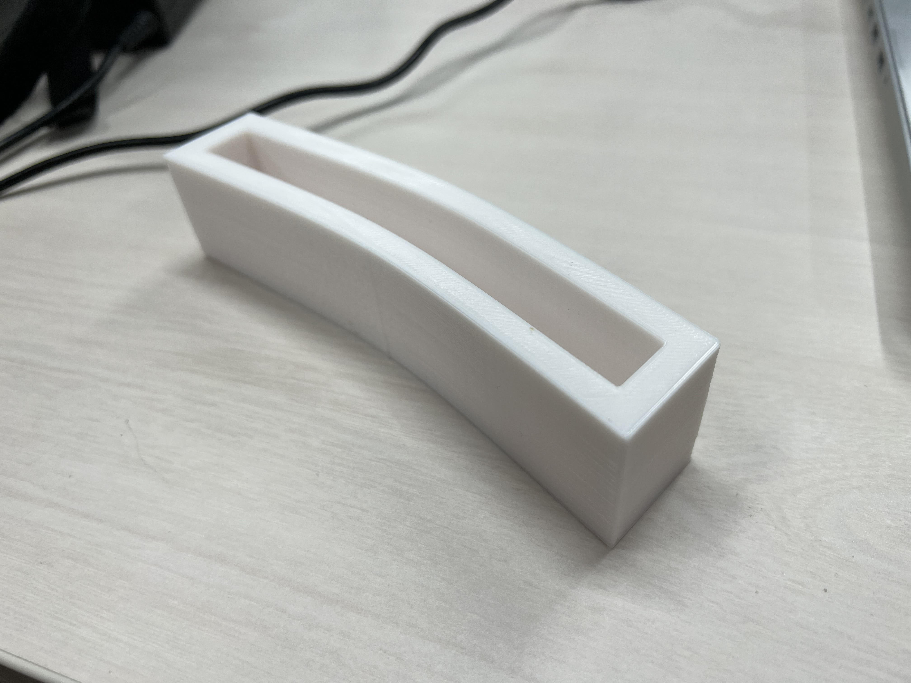

Design for Others 前髪ガード
11班では、街中で自分の顔をスマホで確認する人達を問題に取り上げ、前髪が崩れることを気にしないための道具を考えました。
湿気、汗、風などから前髪を守るカバーです。

↑実際に作ってみたものです。サイズは問題なく、ちゃんと機能しそうでした。
手を離して使えるようにするために、メガネ型にする案、穴を開けてゴムを通す案がでました。
そのために薄型にして、軽量化する必要があると考えました。
操作ミスで完成させることはできませんでしたが、進化版のデザインです。
もう少し頭に添うような形にして、ゴムを通すための穴を作り、壁の幅を薄くしました。